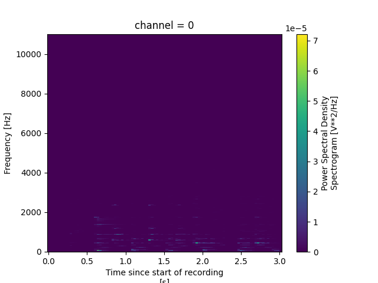
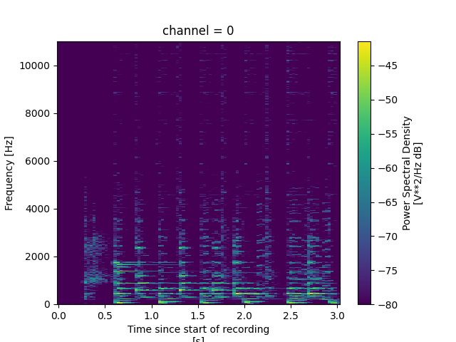
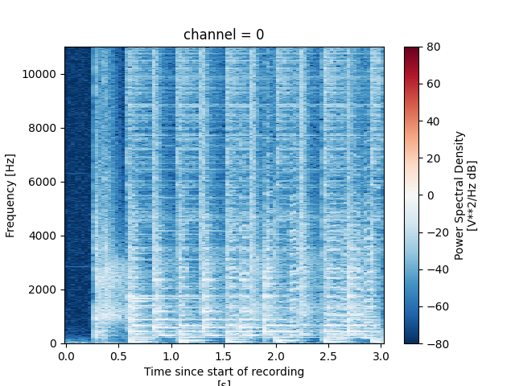

Note
Click here to download the full example code
Computing spectrograms#
After audio loading one of the most common operations within audio analysis is to compute spectral representations of the audio signal. These attempt to describe the signal in terms of its frequency content over time.
The most common spectral representation is the spectrogram. This is a two-dimensional representation of the signal that shows the frequency content of the signal over time. The spectrogram is computed by taking the short-time Fourier transform (STFT) of the signal.
Here we will show how to compute spectrograms using the
audio.compute_spectrogram function.
First, we will load a recording. We will use the the example recording from the (audio loading tutorial)[audio_loading].
from soundevent import arrays, audio, data
recording = data.Recording.from_file("sample_audio.wav")
wave = audio.load_recording(recording)
print(wave)
Out:
<xarray.DataArray (time: 66150, channel: 1)> Size: 529kB
array([[ 9.15527344e-05],
[ 2.13623047e-04],
[ 0.00000000e+00],
...,
[-3.66210938e-04],
[-1.30310059e-02],
[-6.92749023e-03]])
Coordinates:
* time (time) float64 529kB 0.0 4.535e-05 9.07e-05 ... 3.0 3.0 3.0
* channel (channel) int64 8B 0
Attributes:
recording_id: 0b8cbf03-3594-4290-96eb-41210823b501
path: sample_audio.wav
units: V
standard_name: amplitude
long_name: Amplitude
Next, we will compute the spectrogram. Notice the spectrogram parameters are specified in terms of time, not samples. This is to facilitate working with audio signals that have different sample rates.
spectrogram = audio.compute_spectrogram(
wave,
window_size=0.064,
hop_size=0.032,
)
print(spectrogram)
Out:
<xarray.DataArray (frequency: 706, time: 95, channel: 1)> Size: 537kB
array([[[9.48147039e-10],
[1.91579591e-09],
[3.98807627e-09],
...,
[1.07020113e-08],
[1.55005539e-09],
[3.26203298e-08]],
[[9.54001588e-10],
[2.12661567e-09],
[9.61547511e-10],
...,
[2.32123311e-09],
[1.87590952e-08],
[5.31787765e-08]],
[[7.86433801e-10],
[8.36052541e-10],
[2.13328850e-09],
...,
...
...,
[4.53488538e-09],
[3.50412152e-09],
[6.53502087e-10]],
[[1.30371431e-14],
[1.07942541e-13],
[3.98618216e-14],
...,
[1.62310750e-08],
[3.94325918e-09],
[5.51758315e-10]],
[[1.23269432e-15],
[1.13442323e-14],
[2.60915676e-14],
...,
[6.38338455e-09],
[7.43449520e-10],
[4.53509492e-10]]])
Coordinates:
* frequency (frequency) float64 6kB 0.0 15.63 31.25 ... 1.1e+04 1.102e+04
* time (time) float64 760B 0.0 0.03202 0.06404 ... 2.946 2.978 3.01
* channel (channel) int64 8B 0
Attributes:
recording_id: 0b8cbf03-3594-4290-96eb-41210823b501
path: sample_audio.wav
units: V**2/Hz
standard_name: spectrogram
long_name: Power Spectral Density Spectrogram
window_size: 0.064
hop_size: 0.032
window_type: hann
Notice that the spectrogram is a three-dimensional
xarray.DataArray. The first dimension is
frequency, the second is time, and the third is channel. The
spectrogram is computed separately for each channel of the audio
signal.
One of the nice things about using xarray is that it allows us to easily plot the spectrogram using the built-in plotting functions.

Out:
The initial plot is hard to interpret due to the linear scale. Decibels (dB)
are more perceptually relevant for sound.
Let's convert it to decibels using the
arrays.to_db function.

Out:
This is much better! We can now clearly see the frequency content evolving over time.
To make subtle details even more apparent, we can apply a
de-noising technique like PCEN (Per-Channel Energy
Normalization). PCEN helps reduce background noise and
enhance the target sounds. We can apply PCEN using the
audio.pcen function.

Out:
In this case the PCEN transformation has not made a huge difference, but it can be very useful in other cases.
Total running time of the script: ( 0 minutes 1.507 seconds) Estimated memory usage: 43 MB
Download Python source code: 3_computing_spectrograms.py